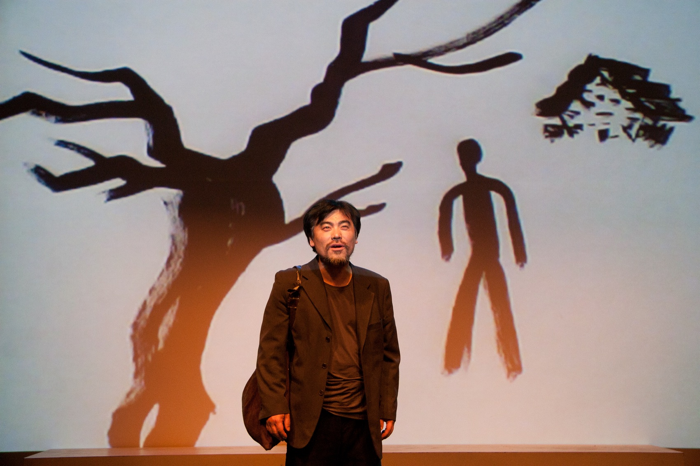
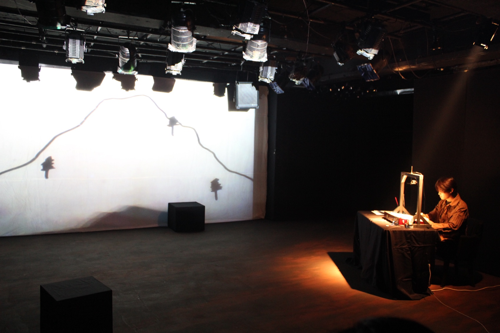
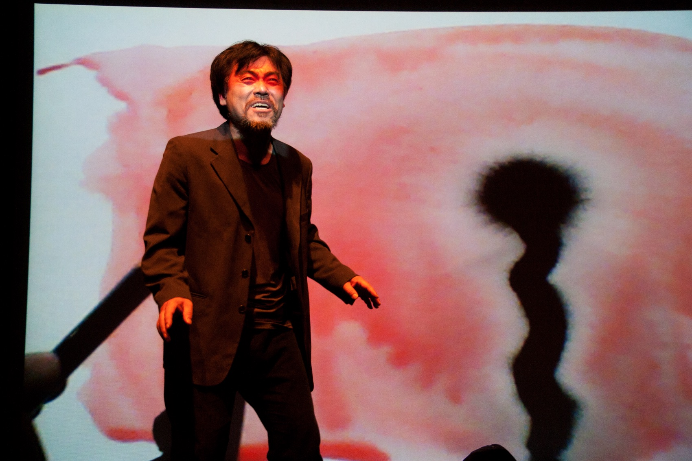
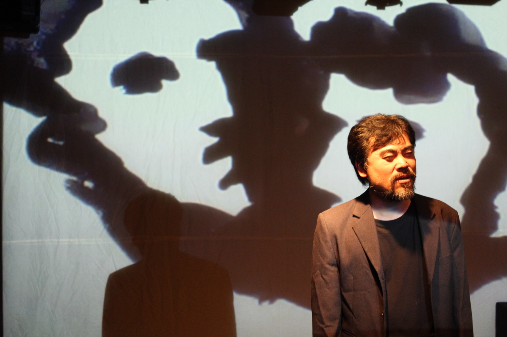

Performance — 2011–2012
Purgatory:
Suddenly a Breakaway Man연옥 : 이탈한 자가 문득 · 극단 거미
거역할 수 없는 운명의 부조리에 맞선 한 남자 — 나쁜 피의 대물림을 끊으려는 인간의 뜨거운 열정을, 비극적 환희로 그리다.
A man against the absurdity of an inescapable fate — the burning will to sever a bloodline of bad blood, drawn as tragic exultation.
예이츠의 《연옥》을 바탕으로 하되, 공연 텍스트는 망자가 된 아들의 시선을 새로운 이야기 축으로 세웠습니다. 망자가 된 아들의 드로잉을 통해 생전의 모습이 회상되며 그려지고, 김중식·기형도·이상의 시 일부가 삽화적으로 재구성되어 흐릅니다.
무대에서 영상언어의 결합이 오케스트라적 유기체가 될 수 있을까 — 이 물음을 구체화하기 위해 드로잉과 영상매체, 드라마를 연동하는 메커니즘을 고민했습니다. 연옥은 망자와 산 자, 과거와 현재, 죄와 깨끗함의 경계를 넘나드는 초현실적 시공간입니다. 텍스트가 지닌 서정적 구도 속에서 극의 시적 일루전을 영상언어로 구현하고자 했습니다. 무대 한켠의 책상에서 퍼포머가 실시간으로 그리는 나무와 집과 사람이, 벽면 가득 확대되어 망자의 기억이 됩니다.
Built on Yeats’s Purgatory, the performance text set a new narrative axis in the gaze of the dead son: his life is recalled and drawn through live drawing, while fragments of poems by Kim Joong-sik, Ki Hyong-do and Yi Sang run through the piece as interleaved episodes. Could the joining of stage and video language become an orchestral organism? To make the question concrete, the production devised a mechanism linking drawing, media and drama. Purgatory is a surreal space-time crossing between the dead and the living, past and present, sin and cleanness — and within the text’s lyric structure, its poetic illusion was rendered in the language of video: a tree, a house, a figure drawn in real time at a desk, enlarged across the walls into the memory of the dead.
- 원작
- Written by
- W.B. Yeats
- 재구성·연출·영상
- Adaptation, direction, video
- 김제민 Kim Jae Min
- 제작
- Produced by
- 극단 거미
- Theatre Company Geomi
- 삽입 시
- Poems woven in
- 김중식 · 기형도 · 이상
- Kim Joong-sik · Ki Hyong-do · Yi Sang
- 키워드
- Keywords
- W.B. Yeats · live drawing · the dead son’s gaze · poetic illusion
배경 — 2011 가을페스티벌 「시심」
Context — the 2011 Autumn Festival ‘Sisim’
아버지의 메모지, 내가 읽은 첫 번째 시
My father’s note — the first poem I ever read
이 작품은 혜화동1번지 5기동인 2011 가을페스티벌 「시심(詩心)」의 첫 작품입니다. 페스티벌 주제는 2008년 어느 회의에서 시인 황지우가 탁자를 내리치며 던진 호통 — “시심을 가지세요” — 를 3년 묵혔다가 꺼낸 것입니다. 연출의 글은 그 곁에 하나의 기억을 놓습니다.
The piece opened the fifth-generation company’s 2011 Autumn Festival ‘Sisim’ — the poet’s heart: a theme drawn from the poet Hwang Ji-woo’s table-pounding rebuke of 2008, kept for three years before being brought out. Beside it, the director’s note sets down one memory.
낚시광인 아버지는 1991년 여름 낚시를 하러 가셨다가 돌아오지 않으셨다. 한 달쯤 지나 자동차 조수석에서 메모지를 발견했다. 마지막 낚시를 하러 가면서 적어놓은 메모지다. 생전 사랑한다는 말도 못하던 아버지가 아내에게, 자식에게 비슷한 표현을 남겼다. … 어쨌든 그 메모지는 내가 읽은 첫 번째 시다. 적어도 그 메모지를 두고 갔으니 아버지의 몸은 그만큼 가벼울 것이다. 그래서 시다.
My father, a fishing man, went out in the summer of 1991 and did not come back. A month later I found a note on the passenger seat of his car, written on his way to that last trip. A man who could never say ‘I love you’ had left something like it, to his wife, to his children. … That note is the first poem I ever read. Having left it behind, his body must have been that much lighter. And so — it is a poem.
— 연출의 글에서
— From the director’s note
- 구천
- The nine heavens
- 사람이 죽으면 ‘여기’에서 ‘저기’로 가야 하는데, 생전에 쌓이고 맺힌 것이 많은 망자는 몸이 무거워 망각의 강을 건너지 못하고 아홉 개의 하늘을 떠돈다고 한다. 연옥의 시공간은 이 상상과 겹쳐진다.
- The dead must pass from ‘here’ to ‘there’ — but those weighed down by what accumulated in life cannot cross the river of forgetting, and drift through the nine heavens. Purgatory’s space-time overlaps with this imagining.
연혁 — 세 도시
History — three cities
혜화동에서 인천, 부산까지
From Hyehwa-dong to Incheon and Busan
2011
연극실험실 혜화동1번지
Hyehwa-dong 1st
11월, 가을페스티벌 「시심」의 첫 작품으로 초연.
November — the premiere, opening the Autumn Festival ‘Sisim.’
2012
인천아트플랫폼 C동
Incheon Art Platform
2월, 레지던시 2기 입주작가 결과보고 공연. 인천에서의 연습과 체류가 작품을 다듬었다.
February — the residency showcase as a second-cohort artist; the Incheon stay refined the work.
2012
부산국제연극제
Busan International Theater Festival
5월, 스페이스씨어터에서 페스티벌 초청 공연.
May — an invited performance at the Space Theater.
공연 기록 — 2011–2012
Performance record — 2011–2012


